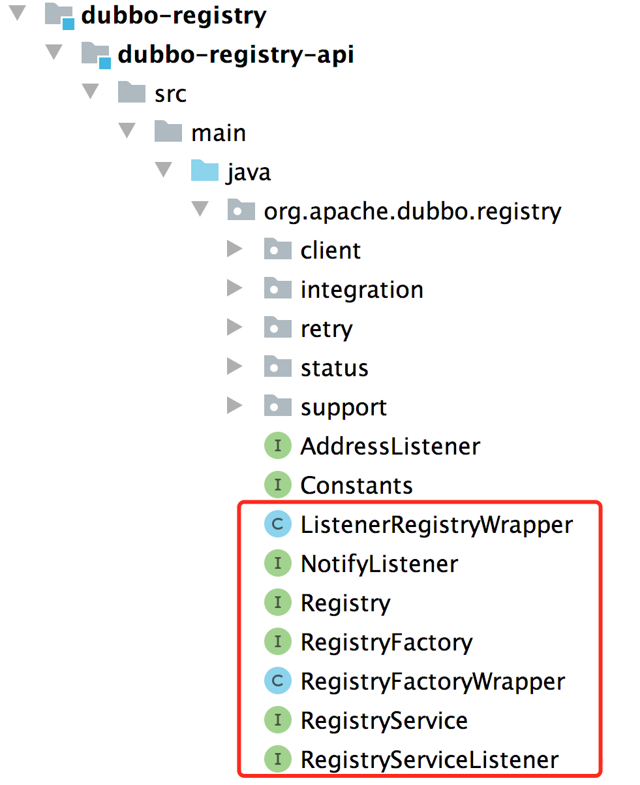
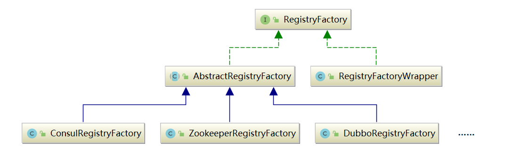

透彻理解Apache Dubbo（四）——dubbo-registry模块：核心接口
注册中心，在微服务架构中的作用举足轻重：
- 服务提供者（Provider） 启动后，会向注册中心完成服务注册；
- 服务消费者（Consumer）启动后，会完成对所需 Provider 的订阅操作，当 Provider 发生变化时，Registry 会主动推送订阅了该 Provider 的所有 Consumer。

本章，我将对dubbo-registry模块中的Registry层进行分析，它在 Dubbo 架构中所处的位置如下图红框所示：

图例说明：
- 图中左边淡蓝背景的为服务消费方使用的接口，右边淡绿色背景的为服务提供方使用的接口，位于中轴线上的为双方都用到的接口；
- 图中从下至上分为十层，各层均为单向依赖，右边的黑色箭头代表层之间的依赖关系，每一层都可以剥离上层被复用，其中，Service 和 Config 层为 API，其它各层均为 SPI；
- 图中绿色小块的为扩展接口，蓝色小块为实现类，图中只显示用于关联各层的实现类；
- 图中蓝色虚线为初始化过程，即启动时组装链，红色实线为方法调用过程，即运行时调时链，紫色三角箭头为继承，可以把子类看作父类的同一个节点，线上的文字为调用的方法。
一、核心接口
registry 注册中心层，封装了服务地址的注册与发现，以服务 URL 为中心，核心扩展接口为 RegistryFactory, Registry, RegistryService、NotifyListener。

1.1 Node节点
在 Dubbo 中，一般使用 Node 这个接口来抽象节点的概念。Node不仅可以表示 Provider 和 Consumer 节点，还可以表示注册中心节点。Node 接口中定义了三个非常基础的方法：
// Node.java
public interface Node {
/**
* 返回当前节点的URL
*/
URL getUrl();
/**
* 检测当前节点是否可用
*/
boolean isAvailable();
/**
* 销毁当前节点并释放底层资源
*/
void destroy();
}
1.2 RegistryService接口
RegistryService 接口抽象了注册服务的基本行为：
// RegistryService.java
public interface RegistryService {
/**
* 注册一个URL
*/
void register(URL url);
/**
* 取消注册一个URL
*/
void unregister(URL url);
/**
* 订阅一个 URL，订阅成功后，当订阅的数据发生变化时，注册中心会主动通知NotifyListener
*/
void subscribe(URL url, NotifyListener listener);
/**
* 取消订阅一个URL
*/
void unsubscribe(URL url, NotifyListener listener);
/**
* 查询符合条件的注册数据
* 它与 subscribe() 方法有一定的区别，subscribe() 方法采用的是 push(推)模式，lookup() 方法采用的是 pull(拉) 模式
*/
List<URL> lookup(URL url);
}
1.3 Registry接口
Registry 接口，继承了 RegistryService 接口和 Node 接口，它表示的就是一个拥有注册中心能力的节点，其中的 reExportRegister() 和 reExportUnregister() 方法都是委托给 RegistryService 中的相应方法：
// Registry.java
public interface Registry extends Node, RegistryService {
default void reExportRegister(URL url) {
register(url);
}
default void reExportUnregister(URL url) {
unregister(url);
}
}
1.4 RegistryFactory接口
RegistryFactory 接口，负责创建 Registry 对象，具体定义如下所示：
// RegistryFactory.java
@SPI("dubbo")
public interface RegistryFactory {
/**
* 根据URL获取对应的Registry对象
*/
@Adaptive({"protocol"})
Registry getRegistry(URL url);
}
上述的 @SPI 注解指定了默认的扩展名为 dubbo，@Adaptive 注解表示会生成适配器类并根据 URL 中的 protocol参数值选择相应的实现。
此外，每一个类型的RegistryFactory，只会负责创建对应类型的Registry，比如默认的DubboRegistryFactory负责创建DubboRegistry，这是典型的工厂方法模式：

上述的 AbstractRegistryFactory 是一个实现了 RegistryFactory 接口的抽象类，提供了规范 URL 的操作以及缓存 Registry 对象的公共能力，它通过模板方法模式让子类去实现具体的功能：
JAVA
// AbstractRegistryFactory.java
public Registry getRegistry(URL url) {
url = URLBuilder.from(url)
.setPath(RegistryService.class.getName())
.addParameter(INTERFACE_KEY, RegistryService.class.getName())
.removeParameters(EXPORT_KEY, REFER_KEY)
.build();
String key = createRegistryCacheKey(url);
LOCK.lock();
try {
Registry registry = REGISTRIES.get(key);
if (registry != null) {
return registry;
}
// 抽象方法，由子类实现
registry = createRegistry(url);
if (registry == null) {
throw new IllegalStateException("Can not create registry " + url);
}
REGISTRIES.put(key, registry);
return registry;
} finally {
LOCK.unlock();
}
}上述类继承图中的 RegistryFactoryWrapper 是 RegistryFactory 接口的 Wrapper 类，它会对底层 RegistryFactory 创建的 Registry 对象外层再封装一个 ListenerRegistryWrapper：
JAVA
// RegistryFactoryWrapper.java
public class RegistryFactoryWrapper implements RegistryFactory {
private RegistryFactory registryFactory;
public RegistryFactoryWrapper(RegistryFactory registryFactory) {
this.registryFactory = registryFactory;
}
@Override
public Registry getRegistry(URL url) {
return new ListenerRegistryWrapper(registryFactory.getRegistry(url), Collections.unmodifiableList(ExtensionLoader.getExtensionLoader(RegistryServiceListener.class)
.getActivateExtension(url, "registry.listeners")));
}
}
上述的 ListenerRegistryWrapper 是Registry接口的Wrapper类，它的内部维护了一个 RegistryServiceListener 集合，会将 register()、subscribe() 等事件通知到 RegistryServiceListener 监听器。
// ListenerRegistryWrapper.java
public class ListenerRegistryWrapper implements Registry {
private final Registry registry;
private final List<RegistryServiceListener> listeners;
public ListenerRegistryWrapper(Registry registry, List<RegistryServiceListener> listeners) {
this.registry = registry;
this.listeners = listeners;
}
@Override
public void register(URL url) {
try {
registry.register(url);
} finally {
if (CollectionUtils.isNotEmpty(listeners)) {
RuntimeException exception = null;
for (RegistryServiceListener listener : listeners) {
if (listener != null) {
try {
listener.onRegister(url);
} catch (RuntimeException t) {
logger.error(t.getMessage(), t);
exception = t;
}
}
}
if (exception != null) {
throw exception;
}
}
}
}
//...
}
二、AbstractRegistry实现
AbstractRegistry 实现了 Registry 接口，它抽取了所有Registry 接口实现类的公共逻辑，提供了注册信息的本地缓存等公共能力，把当前节点订阅的 URL 信息缓存到本地的 Properties 文件中。
本节，我将分两部分对AbstractRegistry这个抽象公共类进行讲解：
- 核心字段；
- 公共能力：包括本地缓存、注册/订阅、恢复/销毁。
2.1 核心字段
AbstractRegistry的核心字段如下：
// AbstractRegistry.java
public abstract class AbstractRegistry implements Registry {
// 当前Registry对象的全部配置信息，构造时指定
private URL registryUrl;
// 本地的 Properties 文件缓存
private final Properties properties = new Properties();
// 本地的 Properties 文件
private File file;
// 一个单线程的线程池，当一个Provider的注册数据发生变化时，会将该Provider的全量数据同步到Properties文件和缓存中
// 如果 syncSaveFile == false，就由该线程池异步完成文件写入
private final ExecutorService registryCacheExecutor = Executors.newFixedThreadPool(1, new NamedThreadFactory("DubboSaveRegistryCache", true));
// 是否同步保存文件
// AbstractRegistry初始化时，会根据registryUrl中的file.cache参数值决定是否开启文件缓存
private boolean syncSaveFile;
// 注册数据的版本号，每次写入file文件时，都是全覆盖写入，而不是修改文件，所以需要版本控制
private final AtomicLong lastCacheChanged = new AtomicLong();
// 注册的 URL 集合
private final Set<URL> registered = new ConcurrentHashSet<>();
// 订阅URL的监听器集合，Key是被监听的URL，Value是相应的监听器集合
private final ConcurrentMap<URL, Set<NotifyListener>> subscribed = new ConcurrentHashMap<>();
// 第一层Key是当前节点作为Consumer的一个URL
// 第一层Value是一个Map集合，该Map集合的Key是Provider URL的分类（Category），例如providers、routes、configurators等，Value就是相应分类下的URL集合
private final ConcurrentMap<URL, Map<String, List<URL>>> notified = new ConcurrentHashMap<>();
//...
}
Properties文件是一个 KV 结构，Key 是当前节点作为 Consumer 的一个 URL，Value 是对应的 Provider 列表的URL，包含了providers、routes、configurators 等。Properties中有一个特殊的 Key 值为
registies，对应的 Value 是注册中心列表，其他记录的都是 Provider 列表。
2.2 本地缓存
应用方作为 Provider 或 Consumer 使用Dubbo框架时，会依赖dubbo-registry包，dubbo-registry负责完成与 ZooKeeper、Etcd、Consul 等注册中心的交互。
当 Provider 端暴露的 URL 发生变化时，注册中心会通知订阅了该 Provider 的所有 Consumer 的 Registry 组件，Registry 组件会调用 notify() 方法，被通知的 Consumer 会完成本地缓存和properties文件的修改。
下面我们来看 AbstractRegistry 的 notify() 方法的核心实现：
- url：Consumer URL；
- listener：Consumer URL对应的监听器；
- urls：Provider URLs
// AbstractRegistry.java
protected void notify(URL url, NotifyListener listener, List<URL> urls) {
//...
Map<String, List<URL>> result = new HashMap<>();
for (URL u : urls) {
// 需要Consumer URL与Provider URL匹配，匹配规则如下：
// 1.匹配 Consumer 和 Provider 的接口，双方接口相同或者其中一方为“*”，则匹配成功
// 2.匹配 Consumer 和 Provider 的 category
// 3.检测 Consumer URL 和 Provider URL 中的 enable 参数是否符合条件
// 4.检测 Consumer 和 Provider 端的 group、version 以及 classifier 是否符合条件
if (UrlUtils.isMatch(url, u)) {
// 根据Provider URL中的category参数进行分类
String category = u.getParameter(CATEGORY_KEY, DEFAULT_CATEGORY);
List<URL> categoryList = result.computeIfAbsent(category, k -> new ArrayList<>());
categoryList.add(u);
}
}
if (result.size() == 0) {
return;
}
Map<String, List<URL>> categoryNotified = notified.computeIfAbsent(url, u -> new ConcurrentHashMap<>());
for (Map.Entry<String, List<URL>> entry : result.entrySet()) {
String category = entry.getKey();
List<URL> categoryList = entry.getValue();
// 更新notified
categoryNotified.put(category, categoryList);
// 调用NotifyListener
listener.notify(categoryList);
// 更新properties文件缓存
saveProperties(url);
}
}
上述的saveProperties()方法，注意逻辑如下：
- 取出当前 Consumer 订阅的各个Provider分类的 URL ，将它们以空格连接起来；
- 以当前 Consumer 的 ServiceKey 为键值（格式
[group]/{interface(或path)}[:version]），写入 properties 中，同时lastCacheChanged版本号会自增； - 根据 syncSaveFile 字段值，决定是采用同步还是异步的方式更新 file 文件。
// AbstractRegistry.java
private void saveProperties(URL url) {
//...
try {
StringBuilder buf = new StringBuilder();
// 取出当前 Consumer 订阅的各个Provider分类的 URL，以空格连接
Map<String, List<URL>> categoryNotified = notified.get(url);
if (categoryNotified != null) {
for (List<URL> us : categoryNotified.values()) {
for (URL u : us) {
if (buf.length() > 0) {
buf.append(URL_SEPARATOR);
}
buf.append(u.toFullString());
}
}
}
// 写入properties
properties.setProperty(url.getServiceKey(), buf.toString());
// 版本号+1
long version = lastCacheChanged.incrementAndGet();
// 根据 syncSaveFile 字段值，决定是采用同步还是异步的方式更新 file 文件
if (syncSaveFile) {
// 同步
doSaveProperties(version);
} else {
// 异步
registryCacheExecutor.execute(new SaveProperties(version));
}
} catch (Throwable t) {
logger.warn(t.getMessage(), t);
}
}
本地缓存文件的具体路径是：
/.dubbo/dubbo-registry-[当前应用名]-[当前Registry所在的IP地址].cache
在网络抖动等原因而导致订阅失败时，Consumer 端的 Registry 就可以调用 getCacheUrls() 方法获取本地缓存，从而得到最近注册的 Provider URL。可见，AbstractRegistry 通过本地缓存提供了一种容错机制，保证了服务的可靠性。
2.3 注册
AbstractRegistry 的 registry() 方法会将当前节点要注册的 URL 缓存到 registered 集合，而 unregistry() 方法会从 registered 集合删除指定的 URL，例如当前节点下线的时候。
// AbstractRegistry.java
public void register(URL url) {
if (url == null) {
throw new IllegalArgumentException("register url == null");
}
if (logger.isInfoEnabled()) {
logger.info("Register: " + url);
}
registered.add(url);
}
单看 AbstractRegistry 的实现，上述注册方法都是内存操作，但是 Java 有继承和多态的特性，AbstractRegistry 的子类会覆盖上述注册方法进行增强。
2.4 订阅
AbstractRegistry 的 subscribe() 方法会将当前节点作为 Consumer 的 URL 以及相关的 NotifyListener 记录到 subscribed 集合，unsubscribe() 方法会将当前节点作为 Consumer 的 URL 以及关联的 NotifyListener 从 subscribed 集合删除。
// AbstractRegistry.java
@Override
public void subscribe(URL url, NotifyListener listener) {
if (url == null) {
throw new IllegalArgumentException("subscribe url == null");
}
if (listener == null) {
throw new IllegalArgumentException("subscribe listener == null");
}
if (logger.isInfoEnabled()) {
logger.info("Subscribe: " + url);
}
Set<NotifyListener> listeners = subscribed.computeIfAbsent(url, n -> new ConcurrentHashSet<>());
listeners.add(listener);
}
单看 AbstractRegistry 的实现，上述订阅方法都是内存操作，但是 Java 有继承和多态的特性，AbstractRegistry 的子类会覆盖上述订阅方法进行增强。
2.5 恢复
在当前节点因为网络问题与注册中心断开连接后，会进行重连，重连成功之后，会调用 recover() 方法：
- 遍历
registered集合中的全部 URL，然后重新调用 register() 方法，恢复注册数据； - 遍历
subscribed集合中的全部 URL ，然后重新调用 subscribe() 方法，恢复订阅监听器。
// AbstractRegistry.java
protected void recover() throws Exception {
// 1.遍历registered集合中的全部 URL，重新注册
Set<URL> recoverRegistered = new HashSet<>(getRegistered());
if (!recoverRegistered.isEmpty()) {
for (URL url : recoverRegistered) {
// 注册
register(url);
}
}
// 2.遍历subscribed集合中的全部 URL，重新订阅
Map<URL, Set<NotifyListener>> recoverSubscribed = new HashMap<>(getSubscribed());
if (!recoverSubscribed.isEmpty()) {
for (Map.Entry<URL, Set<NotifyListener>> entry : recoverSubscribed.entrySet()) {
URL url = entry.getKey();
for (NotifyListener listener : entry.getValue()) {
// 订阅
subscribe(url, listener);
}
}
}
}
2.6 销毁
在当前节点下线时，会调用 destroy() 方法释放底层资源。AbstractRegistry 实现的 destroy() 方法会调用 unregister() 方法和 unsubscribe() 方法将当前节点注册的 URL 以及订阅的监听全部清理掉（不会清理非动态注册的 URL，即 dynamic 参数明确指定为 false）。
// AbstractRegistry.java
public void destroy() {
// 1.遍历registered集合中的全部 URL
Set<URL> destroyRegistered = new HashSet<>(getRegistered());
if (!destroyRegistered.isEmpty()) {
for (URL url : new HashSet<>(getRegistered())) {
// 只清理动态注册的url
if (url.getParameter(DYNAMIC_KEY, true)) {
try {
// 取消注册
unregister(url);
} catch (Throwable t) {
logger.warn("Failed to unregister url " + url + " to registry " + getUrl() + " on destroy, cause: " + t.getMessage(), t);
}
}
}
}
// 2.遍历subscribed集合中的全部 URL
Map<URL, Set<NotifyListener>> destroySubscribed = new HashMap<>(getSubscribed());
if (!destroySubscribed.isEmpty()) {
for (Map.Entry<URL, Set<NotifyListener>> entry : destroySubscribed.entrySet()) {
URL url = entry.getKey();
for (NotifyListener listener : entry.getValue()) {
try {
// 取消订阅
unsubscribe(url, listener);
} catch (Throwable t) {
logger.warn("Failed to unsubscribe url " + url + " to registry " + getUrl() + " on destroy, cause: " + t.getMessage(), t);
}
}
}
}
// 移除缓存的当前节点
AbstractRegistryFactory.removeDestroyedRegistry(this);
}
三、总结
本章，我对dubbo-registry注册中心模块中的几个核心接口，以及基础抽象实现类AbstractRegistry的功能进行了讲解，AbstractRegistry提供了核心的注册信息缓存的公共能力。